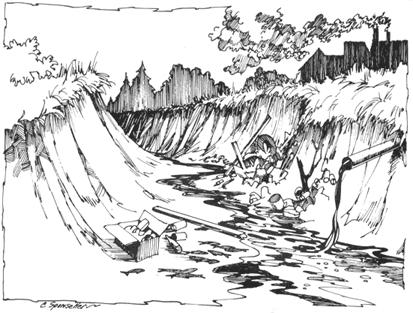

Still, some polluters are prosecuted - often at the insistence of private citizens or environmental protection groups - and a fair number of the violators are convicted and fined. That's not news, either . . . but here's a fact you may not know: In the last couple of years, some of the activists whose complaints led to those convictions have been awarded shares of the fines levied against the wrongdoing corporations.
In 1970, for example, a mother and her son collected $12,500 for reporting a polluter at their own doorstep . . . a sportsmen's club bagged part of the $200,000 fine imposed on the Anaconda Wire and Cable Company during 1971 . . . and in a recent Wisconsin case, a congressman was awarded $1,740 merely for pointing out to the authorities that evidence of a suspect's polluting activities was already on file.
In theory, any U.S. citizen can help run down an offending industry, with a chance of cashing in on the proceeds of the company's conviction. If you attempt to do so without thorough preparation, however, making a successful complaint may not be all that easy. Since the local authorities - like their superiors in Washington - often do not share your zeal for pollution chasing, you'd be well-advised to know your rights under the law before you start . . . or you just might find that your letters go unanswered and your telephone calls are brushed off.
If you want to go bounty-hunting, then, you need to know [1] the legal grounds for your complaint and [2] the correct procedure for filing it. Until recently the published writing on both [1] and [2] has been vague and scattered, if not inaccessible. This article is designed to help close that information gap by offering [a] a brief account of the law and its conservationist application and [b] a reading list for more detailed study. If you'd like to help check the industrial discharges that foul our waters - and maybe rake in a cash reward too - read on.
The bread you may collect for turning in a polluter of this country's waterways is technically called a moiety. That's legalese for "a half share", though recent decisions have varied this percentage.
Your right to such payments dates from a period in American history when the national legislature passed a raft of so-called "Moiety Acts" . . . statutes that encouraged the prosecution of violators by authorizing payment of half the wrongdoer's fine to the fink or finks who reported him. Several of these Federal acts are still on the books and provide for moiety awards out of penalties imposed under several statutes: the narcotics law (21 U.S.C. § § 183,199); the act regulating cotton futures (26 U.S.C. § 7263 [b] ); the customs statute (19 U.S.C. § 1619) the law controlling liquor in Indian country (18 U.S.C. § 201). Moieties are also granted in cases involving recoveries in suits for false claims against the United States (31 U.S.C. § 232 [E] ). Finally - and this is the enactment that concerns us - bounties are payable for convictions under that portion of the Rivers and Harbors Act known as the Refuse Act of 1899 (33 U.S.C. § 407).
The Refuse Act is a thoroughgoing piece of legislation which provides stiff penalties for the throwing, discharging or depositing of any refuse matter - of any kind - from a vessel or from a shore-based facility into either the nation's navigable rivers, lakes, streams and other bodies of water, or any tributary to such waters, without a permit from the Army Corps of Engineers. It also prohibits the placing on the bank of any navigable waterway, or any tributary to such waterway, any material that could be washed into such navigable water either by ordinary or high tides, or by storms or floods, or otherwise, whereby navigation would be impeded.
Clearly, the 1899 act is a sharp weapon and could have saved us all a lot of trouble . . . if only the Federal Government had seen fit to enforce it instead of letting it rust unused for 72 years.
The credit for resurrecting the Refuse Act as a conservation tool goes to the House Subcommittee on Conservation and Natural Resources, which ran across the forgotten statute in 1970 and realized its implications. In 1971, the subcommittee's chairman - Democratic Congressman Henry S. Reuss of Wisconsin - decided to test the law in court by pressing complaints against offending corporations in his home state. In the case already mentioned - United States v. St. Regis Paper Co., 328 F. Supp. 660 (WD Wis 1971)-the congressman called the U.S. Attorney's attention to the fact that all the information necessary to convict the polluting industry under the 1899 statute was already on file at the Wisconsin Department of Natural Resources. Indeed it was, and - besides seeing his quarry convicted - Reuss collected half the fine.
Predictably, the Federal Government hasn't endorsed Representative Reuss' action by urging other citizens to go and do likewise. When the nation's lawmakers provided moiety payments for convictions under the Refuse Act, they couldn't have foreseen that an immense increase in pollution would eventually make it everyone's business to turn in those who endanger our environment. As it is - after its long history of ignoring the Refuse Act - the Justice Department shows no enthusiasm for being swamped with prosecutions (especially if they're to be followed by whopping bounty payments to the informers). Although the department went so far as to promulgate guidelines - reprinted with this article - governing citizens' investigations under the 1899 act, it never authorized their release to the news media.
Even without much active encouragement from Washington, however, environmentalists have been able to make good use of the 1899 statute since its revival . . . and oddly enough, the law's weakest point has turned out to be a useful handle for citizens' investigations of industrial water pollution.
That weak point of the Refuse Act is the recently added (and highly controversial) part about the "permit from the Army Corps of Engineers". Under the permit program established on December 23, 1970 by Executive Order of the President No. 11,574, the Corps is authorized to issue - on proper application - what amounts to a pollution license. A case now on appeal (Kalor v . Resor, 335 F. Supp. 1, D.D.C. 1971) would require that every application for such a permit - and there are now over 25,000 of these requests - be accompanied by an Environmental Impact Statement pursuant to the National Environmental Protection Act of 1969.
Conservationists have been highly critical of the permit program on the grounds that it dangerously weakens the Refuse Act. Loophole or not, though, that same permit requirement has turned out to be the key to citizens' investigations of offenses against the 1899 statute . . . for any industry that pours wastes into the waterways without permission from the Corps of Engineers is in clear violation of the law . . . and many polluters, in fact, have no such permission. You may therefore be able to bring a complaint against a polluting local industry - and make it stick - by proving two points: first, that the company lacks a permit to discharge refuse and second, that it is in fact dumping waste into navigable water.
If you don't know where to begin a Refuse Act investigation because you're not sure which of several industries is causing the offensive conditions you've noticed in your local waters, the following information may help you narrow down the search:
Domestic sewage, industrial and organic wastes usually come from food processing factories, fruit and vegetable canneries, fish canneries and fish reduction plants, slaughterhouses, wineries and breweries.
Sulfite waste liquor is discharged by millponds and by lumber and pulp mills.
Mineral wastes can be traced to metal-processing plants, plating works, steel mills, mines and mine drainage, ore processing, petroleum and natural gas wells (in use or abandoned) and refineries, chemical plants and industries that use brines and oils . . . or they may originate from manufacturing, drilling, dredging or terminal loading operations.
When you think you have your quarry identified, see your local Army Corps of Engineers (in the telephone book under U.S. Government, Department of Defense) to find out whether the suspect has a permit to discharge wastes. This information is of public record, and will be made available to you.
If you don't find a permit on file, however, you're still not home free. Possibly the company you're investigating has submitted an Environmental Impact Statement, and the license is pending. These statements are listed and summarized in a monthly publication called 102 MONITOR, put out by the Council on Environmental Quality. Large libraries and local pollution control agencies subscribe to this bulletin, which can also be obtained for $6.50 a year (60 cents per copy) from the U.S. Government Printing Office.
If and when you do find that the company you're investigating has no permit to discharge refuse into a waterway, you must still be able to show that it is indeed doing so . . . and you want your evidence to be strong enough to make you eligible for the moiety if the company is convicted. Which raises an interesting point: How much information must you furnish in order to qualify for the bountv?
The mother-and-son case already referred to ( US. v. TransitMix, U.S. District Court, Southern Division of New York, No. 70 Cr. 844, December 11, 1970) originated when the folks got tired of seeing a concrete company dump waste into New York's East River in front of their house. They figured that sort of behavior was wrong and there must be a law against it . . . and, of course, they were correct. In Transit-Mix, the exasperated citizens didn't give all (or even most) of the information on which the conviction was obtained, and the government already had evidence before the mother and son gave theirs. Nevertheless, the family's information-and the fact that they gave it-"led to the conviction" of the defendant and qualified the pair for the moiety under the statute.
Or consider the St. Regis Paper Co. case, in which Congressman Reuss simply told the U.S. Attorney where to find evidence that was already a matter of public record. In its decision the court held that it is sufficient if the informer identifies where proof of his allegations can be obtained . . . he himself need not possess all the information.
In practice, though, the real test of the sufficiency of your evidence will be whether it satisfies your regional U.S. Attorney. (Because charges under the Refuse Act are criminal in nature, this official must present them to a grand jury which decides whether to indict the accused company.)
Your U.S. Attorney-who may or may not be conservation-minded-has some freedom to choose how he will handle water pollution cases. He is within his rights if he insists that your information be gathered and prepared according to the Justice Department's guidelines. However-if the violation is apparent or flagrant-he can proceed on any "clear and convincing" evidence . . . because the grand jury is empowered to subpoena anyone it wishes (including corporate officials) and require the witnesses to disclose just what pollutants the company discharges, and in what quantities.
Probably the most "clear and convincing" evidence of pollution that you can place before the U.S. Attorney is analyzed samples of the fouled water, with records of when and where they were collected. If you're in earnest about bounty-hunting, then, you may have to do some homework from the reading list that accompanies this article, acquire some basic sampling equipment and set out in a small boat after your evidence.
Before you begin sampling, though, it's wise to check out a local water analysis laboratory (use the Yellow Pages this time) to find out what they charge for the tests you require and how they prefer their samples collected.
A word of caution here: These labs have their own code of ethics and will not furnish an analysis for the purpose of prosecuting a company with which they do regular business . . . so inquire discreetly.
(According to William H. Brown in HOW TO STOP THE CORPORATE POLLUTERS - see the reading list - you really shouldn't have to have the samples analyzed. The U.S. Attorney is supposed to turn over the evidence to the Environmental Protection Agency for testing. Local officials aren't always zealous about Refuse Act prosecutions, however, and may even be hostile to them. If you feel that private analysis is the safest course, be prepared to pay $30.00 to $90.00 per bottle, unless you can find a sympathizer who is competent to run the tests. In case of conviction - which isn't certain, of course - you will recover the money you invest. - MOTHER.)
Basically, there are two types of samples: "grab" and "composite". A grab sample is just what the name implies . . . just dip a tube in the water and you've got it. (Heed the guidelines' warning against scraping.) Composite samples, on the other hand, are gathered in proportion to the hourly flow of the discharge. For example, if 100 gallons are poured out each hour, you gather 100 milliliters each hour and mix these into a 24-hour sample.
Here's a tip on gathering evidence: While the law does not require that the defendant be guilty of scienter (intent to violate the law, or "guilty knowledge"), some companies are willful violators. Therefore they do not pollute during the daylight hours, but at night when the chances of detection are less. A good way of checking whether or not this concealment is going on is to find out when the shifts in the plant are heaviest. If the night shift is a large one, chances are samples should be collected after dark.
To record your observations, buy a cheap bound notebook (one with the pages numbered consecutively) and keep a diary. Spiralbound notebooks lend themselves to the charge that pages have been removed, and could impeach your investigation.
When you're ready, make an appointment with the member of the local U.S. Attorney's staff who prosecutes pollution cases. This shouldn't be difficult . . . just tell him that you want to make a complaint and will bring the evidence with you.
Modern attorneys are sophisticated enough that your appearance and style of dress won't matter. Remember, however, that the official who interviews you will examine your credibility as a witness along with the evidence, and will consider what kind of impression you'd make on a grand jury. Be prepared, don't fake it and be straight.
Will the Refuse Act remain in effect, and continue to offer citizens the opportunity to check pollution and hunt bounty forever?
Well, one possible reply is that the law has been on the books for 74 years, which ain't bad! Of course, since it wasn't enforced during most of that time, there was no pressure to change or repeal it.
Now that the statute is alive again, however, change is impending pending. On October 18, 1972 Congress overrode a Presidential veto and passed the Federal Water Pollution Control Act Amendments of 1972. Title IV of that act creates a new system for the issuance of permits and, in effect, allows polluters to legally obtain a "license to kill". When permits granted under the 1899 act expired, the holders would have to apply for new or continuing licenses under the revised program.
Don't despair, though, for this issue is far from being settled. Environmentalist lawyers are incensed that the new legislation creates exemptions to the National Environmental Protection Act (no Environmental Impact Statements are required in certain instances). Thus it's reasonably certain that Title IV will be tested for its constitutionality, on the grounds that the classification system for permit applicants doesn't offer equal protection under the law. Under the circumstances, prosecution under the 1899 act is expected to continue for some time to come.
1. DETERMINATION OF THE PRESENCE OF AN ARMY CORPS OF ENGINEERS PERMIT
A citizen having information about any discharge of refuse into navigable waters should first ascertain whether the discharge is authorized by a permit from the Army Corps of Engineers. Evidence of the lack of such a permit should be presented by means of a written response from the district office of the Army Corps of Engineers with jurisdiction over the particular waters involved.
2. PHOTOGRAPHS OF THE POLLUTANT
Color photographs should be taken of the pollution and the area involved. They should show the pollutant both as it flows from its source and as it disburses [sic] into the river, stream or other navigable water. A detailed record should be maintained of the exact date and time the photographs are taken, the name of the photographer, and the identity of all individuals present when the photographs are taken.
3. SAMPLES OF THE POLLUTANT
Samples should be placed in clean, covered, and sealed glass bottles. Samples should be taken of:
[1] The source of the pollution;
[2] The stream at the source of the pollution;
[3] The water a short distance upstream; and
[4] The water a short distance downstream.
Care should be taken not to scrape pipes or the bottom of the body of water in taking the samples.
4. ANALYSIS OF SAMPLES
Analysis should be performed by a competent chemist with the requisite educational background and in a complete laboratory. Analysis should consist of the following breakdown:
[a] oil content;
[b] total suspended solids;
[c] volatile suspended solids;
[d] turbidity;
[e] color;
[f] odor;
[g] pH; and
[h] additional breakdowns for the determination of the presence of other special substances.
5. CHAIN OF CUSTODY OF SAMPLES
Each time the custody of the samples changes, a record should be made and retained containing the signature of both the person giving and the person receiving the samples. This record should also indicate where and when the change of custody took place.
6. SOURCE OF POLLUTION
Proof must be present to indicate that the pollution came from the defendant and that the defendant had control over the pollutant when it went into the river, stream or other body of water. If there is a possibility of more than one source of pollution in a body of water, special dyes may be used to trace the source of the particular outfall. Proof is required that the defendant owned and controlled the property from which the pollutant flowed or that he caused the pollution. Deeds to the land in question may be inspected to established ownership. An exact description of the location of the source should be recorded.
7. LEGAL STATUS OF THE POLLUTER
The status of the polluter as an individual, a partnership or a corporation should be established. If the polluter is a corporation the exact corporate name is required along with the name of the individual who is authorized to accept service of process. The full legal address of the defendant should be supplied.
8. STATEMENTS OF WITNESSES TO THE POLLUTION
Signed written statements of witnesses to the occurrence and individuals participating in the investigation should be obtained. If this is not possible, names, addresses and phone numbers should be obtained.
9. REPORTING TO THE OFFICE OF THE UNITED STATES ATTORNEY
A report of the individual investigation with the requisite statements, photographs and test results should be submitted to the office of the United States Attorney in the area where the act or acts of pollution occurred.
|
 |
|
|